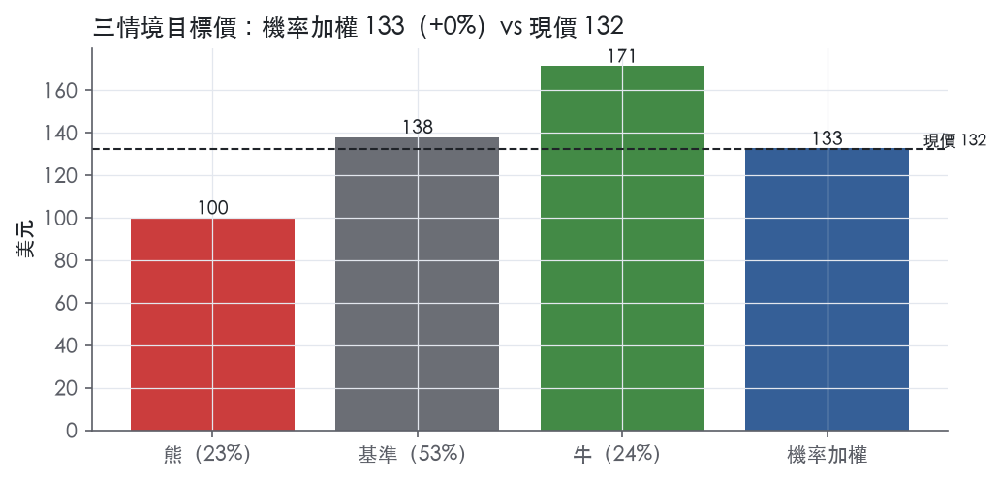
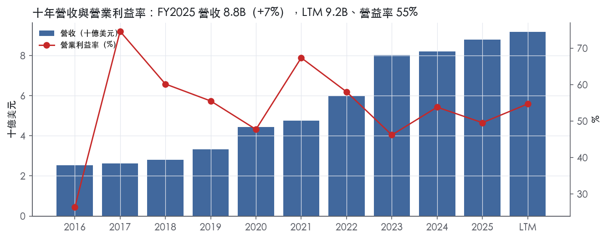
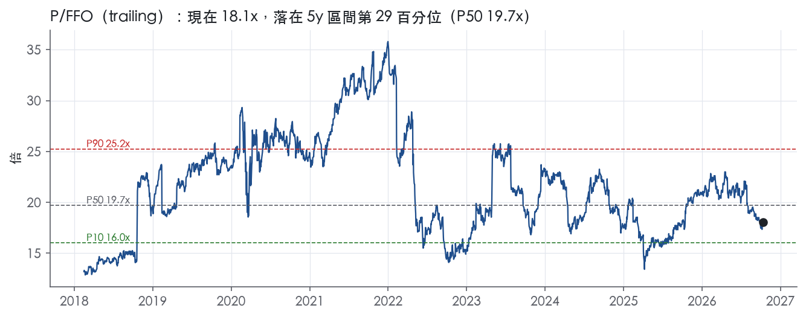
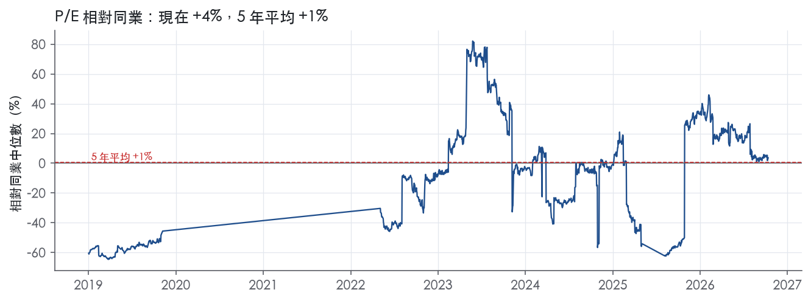
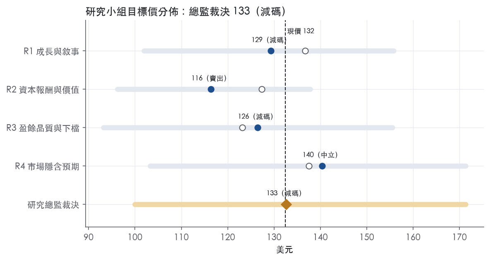
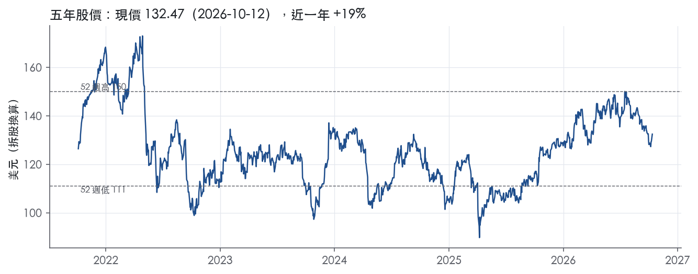

評等總表 › 不動產 › PLD
定價公允、報酬低於門檻，中性｜評等 減碼｜目標價 133
| 評等 | 減碼（邊界，鄰近中立） |
| 12 個月目標價 | 133 美元 |
| 現價 | 132.47 美元（2026-10-12） |
| 預期報酬 | 股價 +0.1%＋股息 3.2%＝總報酬 +3.3%；同業籃門檻 10.1%，超額 -6.8% |
| 估值方法 | P/FFO 18.9x，套在第 5–8 季的FFO（也就是一年後的未來四季） |
| 三情境 | 熊 100／基準 138／牛 171 |
| 研究流程 | 四位研究員兩輪辯論＋研究總監裁決 |
| 資料來源 | SEC EDGAR XBRL、Tiingo、FRED（全免費） |
定價公允、報酬低於門檻，中性（研究總監裁決，四位研究員兩輪辯論後）
評等 減碼（邊界，鄰近中立）｜12 個月目標價 133 美元（總監三情境機率加權 137 與研究員中位數 128 各半）｜現價 132.47（2026-10-12）
預期報酬：股價 +0.1%＋股息 3.2%＝總報酬 +3.3%。同業籃門檻 10.1%，超額 -6.8%，離中立的分界不到三個百分點，屬邊界評等（落在其他級距的機率約三成）。
估值方法：P/FFO 18.9x，套在第 5–8 季的FFO（也就是一年後的未來四季）。三情境：熊 100（23%）／基準 138（53%）／牛 171（24%）。
立場中性而評等減碼：評等看的是「預期總報酬 3.3% − 同業籃門檻 10.1%」＝超額 -6.8%，不是絕對漲跌；中性但超額偏離門檻，代表情境機率或股利把報酬推離門檻。
什麼會讓研究總監改變看法：2027 年 1 月指引開發利得中點 ≥ 700M 且其他處分利得維持上半年節奏，我會把營益率回到 49.7% 並轉偏多；2026Q3 下修同店 NOI 指引或出租率跌破 95.25%，轉偏空。
| 過去四季（實際，FY2026Q2） | 未來四季 | 第 5–8 季 | 第 9–12 季 | |
|---|---|---|---|---|
| 營收（B） | 9.2B | 9.9B | 10.6B | 11.2B |
| 營收成長 | 7.3% | 7.3% | 7.0% | 6.5% |
| 營業利益率 | 54.7% | 47.5% | 47.0% | 46.5% |
| 每股 FFO（美元） | 7.53 | 6.82 | 7.30 | 7.77 |
| FFO 成長 | 14.7% | -9.5% | 7.1% | 6.4% |
| 每股股息（美元） | 4.16 | 4.16 | 4.16 | 4.16 |
| EPS（美元） | 4.49 | 3.68 | 3.95 | 4.21 |
| P/FFO（現價） | 17.6x | 19.4x | 18.1x | 17.0x |
| 股息殖利率（現價） | 3.2% | 3.1% | 3.1% | 3.1% |
過去四季為申報數字；預測為研究總監的假設、程式計算。倍數與殖利率都用現價計算，用來看現價對應各期獲利的高低。
| 情境 | 機率（歷史） | 故事 | 未來四季營收成長 | 第 5–8 季營益率 | 倍數 | 目標價 | 股價漲跌 |
|---|---|---|---|---|---|---|---|
| 熊 | 23%（21%） | 風險表第 1 條交易市場降溫使開發利得回到 2025 上半年水準、第 2 條 2027 年 2,034M 低息債以近 4.2% 再融資、第 3 條市場租金轉負使同店 NOI 跌破指引，倍數落到 5y P10 與前瞻帶 P25 之間 | 5.0% | 41.0% | 16.0x | 100 | -24.5% |
| 基準 | 53%（57%） | 租金照同店 NOI 指引成長、promote 不外推、利得相對 FY2025 高水位打折、再融資逐步墊高利息，倍數持平 | 7.3% | 47.0% | 18.9x | 138 | 4.2% |
| 牛 | 24%（22%） | 資料中心在 1.6GW 已取得電力上落地建後租約、基金注資讓利得維持上半年節奏，倍數走向前瞻帶 P90 | 10.0% | 51.0% | 21.0x | 171 | 29.3% |
目標價由程式依研究總監的驅動與倍數計算；機率由研究總監給定。括號內是歷史頻率：把這檔股票過去十年 12 個月報酬的波動形狀，置中在基準情境，結果落在各情境附近的比例。

四位研究員用不同方法各自估值，回應研究總監的質疑後交出第二輪，最後由總監逐點裁決。各研究員的主張見第七章，裁決理由見第八章，完整論證見《研究底稿》。
| 立場（一輪→二輪） | 加權目標價（一輪→二輪） | 評等（一輪→二輪） | 第二輪倍數 | 熊～牛目標價 | |
|---|---|---|---|---|---|
| R1 成長與敘事 | 中性→中性 | 137→129 | 中立→減碼 | 19.5x | 102～156 |
| R2 資本報酬與價值 | 中性→看空 | 127→116 | 減碼→賣出 | 18.5x | 96～138 |
| R3 盈餘品質與下檔 | 中性→中性 | 123→126 | 減碼→減碼 | 18.1x | 93～156 |
| R4 市場隱含預期 | 中性→中性 | 137→140 | 中立→中立 | 18.9x | 103～171 |
| 研究總監裁決 | 中性 | 133 | 減碼 | 18.9x | 100～171 |
目標價由程式依各自的驅動與倍數計算；評等＝機率加權總報酬 − 同業籃門檻。
Prologis是一家自我管理的REIT，透過Prologis, L.P.持有幾乎全部資產，是物流地產的全球龍頭，聚焦高門檻、高成長市場¹。公司在20個國家、四大洲經營，物業組合集中在主要商業樞紐，貼近終端消費者以提升貨物流通效率¹。客戶是跨國、全國、區域與地方型的物流使用者，橫跨多個產業，為全球消費者配送各類商品¹。公司本質是「地主＋資產管理人」雙重身分：一塊是直接持有並出租物流資產賺租金，另一塊是替機構投資人管理共同投資基金賺管理費與績效分成。
公司揭露兩個可報導分部：不動產（Real Estate，含租賃營運與開發）與策略資本（Strategic Capital）¹。租賃營運是最大分部，通常貢獻合併營收、盈餘與FFO的90%至95%¹。2025年新簽約租約加權平均租期為70個月，絕大多數合併租金收入、NOI與現金流來自美國¹。開發業務聚焦興建現代化物流設施，並選擇性擴展至資料中心開發，透過取得電力與簽訂建後租賃交易來推進¹。策略資本分部管理10個未合併、1個合併的共同投資基金，公司持股比例介於15%至55%，該分部通常貢獻合併營收、盈餘與FFO（不含績效分成）的5%至10%¹。策略資本營收主要來自資產管理費與物業管理費，多數在美國以外產生¹。截至2025年12月31日，10個未合併共同投資基金持有的營運組合帳面總值為62.4B美元，合計562M平方英尺¹。2026年第二季策略資本營收為242M美元，較去年同期147M美元成長約65%，顯示這塊輕資產業務正在加速放量。
客戶結構高度分散，最大客戶Amazon在合併口徑佔淨有效租金（NER）6.3%，在O&M口徑佔5.3%，沒有單一客戶構成集中風險¹。截至2025年12月31日，合併不動產分部有超過4,000名客戶，佔用649M平方英尺的物流營運物業；O&M口徑則有6,500名客戶，佔用1.3B平方英尺¹。依2026年第二季資料，美國佔NOI約84%，歐洲約9%，其他美洲約5%，亞洲約2%²。策略資本客戶則是159個私募股權基金的投資人，其中多個投資人同時參與多個基金¹。通路上，公司透過直接持有物業收租、再透過共同投資基金吸納第三方資本擴大管理規模，兩條腿互相餵養：開發完成的資產可注入基金實現增值利得，基金又為下一輪開發提供資金。
過去四季營收穩定擴張，但淨利受處分利得與FX波動影響，季度間不平滑。FY2025Q3營收2.21B美元，年增8.7%，營益率42.5%。FY2025Q4營收2.25B美元，年增2.4%，受處分利得推升營益率至72.2%，淨利跳升至1.48B美元。FY2026Q1總營收2,298M美元，其中租金及其他收入2,137M美元、策略資本營收161M美元，淨利980M美元、每股1.05美元，當季開發用地處分利得達293M美元³。公司當時發布的2026全年指引為：核心FFO每股6.07至6.23美元，平均出租率95.00%至95.75%，現金基礎同店NOI成長6.25%至7.00%³。FY2026Q2總營收2,425M美元，年增11.1%，其中租金及其他收入2,183M美元、策略資本營收242M美元，淨利攀升至1,061M美元、每股1.13美元，核心FFO每股1.63美元²。公司同時上修全年指引：核心FFO每股6.22至6.30美元，現金基礎同店NOI成長6.75%至7.25%，全年開發啟動金額（O&M口徑）上調至5.5B至6.5B美元²。截至2026年6月30日，現金1,765M美元、總債務36,442M美元，較2025年底35,037M美元略增²。
公司將未來成長歸納為四項：租金成長、開發創造價值、策略資本優勢與資產負債表實力¹。在租金成長上，2025年租約展延使淨有效租金較到期前上漲約50%，公司估計其持股份額的剩餘租約市場落差（lease mark-to-market）約18%，意味即使市場租金不再上漲，未來幾年租金收入仍有自然成長空間¹。在開發創造價值上，公司目前合併土地及其他不動產投資（含選擇權與Covered Land Plays）潛在可支撐37.3B美元（O&M口徑42.6B美元）的新建物總預期投資額（TEI），其中資料中心在建TEI為686M美元（O&M口徑）¹。在策略資本上，公司計畫透過增加現有與新基金的管理資產規模來成長這塊業務，並藉此自我融資開發活動¹。在資產負債表上，截至2025年12月31日，合併債務加權平均剩餘期限9年、加權平均利率3.2%，總可用流動性7.6B美元¹。公司並特別點名「物理、數位與能源基礎設施的融合」為新成長引擎，正利用開發能力、能源方案與戰略地點選擇性開發資料中心，截至2026年第二季資料中心電力管線已達5.8GW（已取得或進階階段）²。
公司的敘事本質是用美國核心物流組合的穩定租金現金流，疊加資料中心轉換這個新題材去撐估值倍數。目前trailing P/E 29.5倍處於5年分位約31%、EV/EBITDA 20.4倍處於5年分位約28%，估值相對自身歷史不算貴，但也反映市場對同店NOI放緩的疑慮尚未完全解除。若資料中心電力管線真能轉換為可租賃面積，策略資本與開發兩塊非核心業務的營收貢獻比重有機會從目前個位數至雙位數繼續墊高。

依本報告的評級標準，Prologis 沒有經濟護城河：量化底稿顯示，ROIC 有資料的 9 年中，沒有任何一年高於資本成本代理值，我們也沒有把握這個情況在未來 5 年內會翻轉。公司確實有可辨識的競爭優勢，包括稀缺區位、全球規模與策略資本平台，但這些優勢在合併層級沒有轉化成超額資本報酬，主要體現在資產價值與租約到期換約時的租金上調。趨勢判為變窄有兩個理由：ROIC 最新值 4.8% 低於十年平均 5.7%；FY2023 至 FY2025 的 ROIC 依序為 4.4%、5.1%、4.8%（資料包年度表 ROIC 欄），落在十年區間的低端。
公司有兩類有原文證據的優勢，另有一類較弱；無形資產與網路效應找不到證據，不列入。
成本優勢。 公司在開發業務上自述的競爭優勢包括：能以較低成本採購高需求建材、能取得高需求的資料中心設備，以及能取得並擴大電力供應¹。公司表示其系統與基礎設施可以擴充，合併組合與 O&M 組合成長時，增加的 G&A 費用有限¹。O&M 組合規模達 1.3B 平方英尺，公司透過內部的全球 Customer Led Solutions Team，為跨市場客戶提供單一窗口¹。這是真實存在的規模經濟，但規模經濟壓低的是費用率，並沒有改變資產端的報酬率，ROIC 上看不到它的效果。
效率規模（區位稀缺）。 公司的物業組合位於人口密度高、消費成長、進入門檻顯著的市場，包括 Last Touch® 設施¹。土地與再開發用地在 O&M 口徑下可支撐 42.6B 美元的 TEI，另有內部的政府與社區事務及土地使用許可（entitlement）團隊¹。這些證據有一個反證：公司自己承認不動產所有權高度分散，價格具競爭力的物流空間可能壓低出租率與租金，在新增供給偏高的時期尤其明顯¹。高門檻市場限制了新供給，但區位價值大多已經反映在土地與資產的取得價格裡，持有者賺到的是市場報酬，而不是超額報酬。
轉換成本（僅限策略資本分部，證據偏弱）。 策略資本業務由 94% 的開放式基金、長期基金與三個公開掛牌載體構成¹。公司在各共同投資基金的持股比例介於 15% 至 55%，截至 2025 年 12 月 31 日共有 159 名私募基金投資人，其中數名投資人同時參與多個基金¹。長期且開放式的資金結構讓費用流具黏性，但這個分部通常只貢獻合併營收、盈餘與 FFO 的 5% 至 10%（不含績效分成），撐不起整體評級¹。租戶端的 70 個月加權平均租期屬於合約鎖定，不是轉換成本¹。
看不到，數字與「有護城河」的主張直接衝突，所以評級下修為無。ROIC 十年平均 5.7%，資本成本代理值 10.2%，兩者差距為 -4.5%，9 年中高於資本成本的年數是 0。ROIC 標準差只有 1.1%，區間在 4.4% 至 7.7%，代表報酬穩定但偏低，比較像收租型資產持有者的特徵，而不是護城河企業的特徵。營業利益率十年平均 54.0%，但標準差 12.4%，區間從 26.4% 到 74.6%；這樣的波動顯示利潤率受處分利得等非經常項目牽動，不能當成定價能力的證據。ROE 十年平均 7.5%，最新 6.2%，同樣沒有超額報酬的跡象。
我們檢驗過最有力的反方論點：10.2% 的代理值可能高估了低槓桿 REIT 的資金成本，因為公司合併債務的加權平均利率只有 3.2%¹。這個論點不足以改變評級，原因有三：
帳面 ROIC 確實沒有計入未實現的資產增值，但這部分無法用現有資料量化，我們不拿它當作上調評級的依據。
最直接的壓力是換約租金上調空間正在縮小。2025 年換約的淨有效租金上漲約 50%，但剩餘的租約市場落差估計只剩約 18%；公司也承認最近幾季市場租金成長偏低，甚至出現負成長¹。第二個壓力是資本密集度：資本支出占營收的比重在 FY2020、FY2022、FY2023 分別為 69.3%、75.3%、80.0%，這三年 FCF 都是負值（資料包年度表）。開發與資料中心轉型需要持續投入資本，資料中心在建 TEI 在 O&M 口徑下為 686M 美元，報酬率能否高於資本成本還沒有證據¹。第三個壓力是利率：10 年期公債殖利率 5.22%墊高了資本成本的門檻，與 ROIC 的落差進一步擴大。
客戶集中度不是風險來源：最大客戶 Amazon 在合併口徑只占 NER 的 6.3%，前 25 大客戶合計 23.7%¹。可能讓我們上調評級的路徑有一條：資料中心轉換與換約上調若能把 ROIC 推到十年最高值 7.7%以上並維持住，我們會重新評估。
護城河評級為無，所以目標倍數相對同業應該持平，不給溢價；規模與區位品質已經反映在資產價值裡，不能再用倍數重複計價。估值研究員不宜以自身 5 年 P/E 中位數 33.5x作為回歸目標；現在的 29.5x 位於 5 年分位 31.0%，偏低本身不構成溢價的理由。任何溢價假設都應該以 ROIC 實際站上資本成本作為前提，而不是以公司的成長敘事作為前提。
| 指標 | 最新 | 十年平均 | 標準差 | 最低 | 最高 |
|---|---|---|---|---|---|
| ROIC | 4.8% | 5.7% | 1.1% | 4.4% | 7.7% |
| 營業利益率 | 49.6% | 54.0% | 12.4% | 26.4% | 74.6% |
| FCF 利潤率 | 15.7% | 24.5% | 25.7% | -13.0% | 64.4% |
| ROE | 6.2% | 7.5% | 1.6% | 5.4% | 10.8% |
程式計算。資本成本代理值（10 年債＋5%）：10.2%；ROIC 平均減資本成本：-4.5%；ROIC 有資料的 9 年中，高於資本成本 0 年。
LTM營業現金流／淨利1.22x、近三年平均1.53x、十年平均1.35x，三項皆為綠燈，盈餘有現金支撐。但FCF／淨利LTM僅0.61x、近三年平均只有0.19x，為黃燈，顯示扣掉資本支出後現金明顯縮水。這個缺口主要來自開發與資本支出循環，FY2022、FY2023資本支出／營收達75.3%、80.0%，對應FCF為負（量化底稩）。公司FY2025現金流量表顯示營運現金流5,008M，但投資活動用現金3,630M、融資活動用現金1,564M，淨現金減少173M⁴。應計比率LTM為-1.0%、近三年-1.8%，均為負值且優於5.0%門檻，顯示盈餘不是靠應計堆出來的。整體看，PLD的現金轉換在REIT同業中算正常，開發型REIT的FCF天然會被成長性資本支出壓低，不是盈餘品質警訊。
PLD的核心非GAAP指標是Core FFO，2026Q2核心FFO歸屬普通股東/單位持有人1,559M，相較GAAP淨利1,061M高出498M²。最大調整項是不動產相關折舊攤銷，單季663,658千美元（即663.7M）加回²，這是REIT行業慣例，因為會計折舊不反映物業實際增值，加回合理。其次是處置不動產的淨利得（排除開發物業與土地）從FFO中剔除210,975千美元（210.975M），因為一次性處置利得不是經常性收益。Core FFO另外加回開發物業與土地處置淨利得79,196千美元（79.196M）但列在「已實現開發利得」另外單獨揭露每股0.09美元，顯示管理層區分「經常性」與「開發利得」兩塊²；這塊利得具有持續性但波動大，估值時不該全額視為穩定盈餘。單季還有一筆Venture formation costs 6,049千美元（6.049M）加回，屬於一次性交易成本²。股權基礎薪酬（equity-based compensation）2025年認列185M，2024年232M，計入租賃費用、戰略資本費用與G&A，本系統SBC／營收指標並未加回此項，直接反映在GAAP費用中（量化底稿／10-K）【判＋抄：10-K FY2025 Item 7】。整體而言，折舊加回合理反映不動產會計特性，但開發利得與處置利得波動大，估值不該把這塊當作穩定現金流。
淨負債／EBITDA是本章最大問題，LTM 4.46x、近三年平均4.56x，遠高於3.00x紅線。2025年底總債務35.0B美元，加權平均期限9年，有效利率3.2%⁴。2025年發行優先票3.4B美元，加權平均利率4.2%、平均期限8年，用於再融資與擴張⁴；相較2024年發行4.2B美元優先票加權利率4.8%，新發債成本略降但仍高於存量平均利率，顯示再融資成本墊高⁴。利息保障倍數LTM 4.79x、近三年5.08x，為黃燈，低於8.00x的綠燈門檻但仍遠高於3.00x紅線，顯示付息能力雖轄弱化但未達危險區。2025年底公司維持A/A2信用評等、流動性7.6B美元（含信用額度6.5B美元與現金1.1B美元），且「符合所有財務債務契約」⁴。股東回饋（股利＋回購）／淨利LTM 90.6%、近三年平均104.8%，近三年超過100%代表派息與回購合計超過當期淨利，但REIT法定需配發大部分應稅所得，這是結構性而非警訊。稀釋股數年變動近三年平均5.9%、十年平均6.6%，為黃燈，主要因為PLD持續用股票與OP單位融資開發與收購，不是單純稀釋攤薄每股價值，而是成長資本的一部分。
淨負債／EBITDA紅燈（LTM 4.46x，近三年平均4.56x）：真實存在但屬REIT產業常態，不動產公司普遍用較高槓桿融資長期資產，公司維持A/A2評等並表示「符合所有財務債務契約」，顯示槓桿在可控範圍⁴。這不是會計口徑假警報，但確實會限制估值倍數，不能忽略。
淨利率FY2016→FY2017跳動+15個百分點：屬於一次性項目，年度表顯示FY2017營益率74.6%遠高於FY2016的26.4%，此為資產處置或减損認列時間差所致的常見REIT波動，10-K節錄未提供FY2016/17細節比對，無法逐項核實金額，但方向與REIT處置利得認列時點高度相關。
淨利率FY2018→FY2019跳動-12個百分點：同樣判斷為一次性項目造成，年度資本支出／營收從23.7%跳升至20.6%附近區間、處置利得年度間波動大，是REIT開發-處置循環的正常現象，不是經常性盈餘惡化。
淨利率FY2019→FY2020跳動-14個百分點：FY2020資本支出／營收達69.3%，顯著高於FY2019的20.6%，開發支出大增壓縮當期淨利率，屬於成長性投資導致的會計波動，非盈餘品質問題。
淨利率FY2020→FY2021跳動+28個百分點：FY2021營益率67.4%、淨負債大幅轉為-0.34B，顯示當年有大型處置或資本結構重組（如合併/資產出售），10-K節錄未包含該年度細節，無法逐筆核實，但方向與REIT處置利得週期一致。
淨利率FY2022→FY2023跳動-18個百分點：FY2023資本支出／營收達80.0%為十年最高，開發活動強度推高折舊與資本化支出壓縮淨利率，FCF當年為-1.05B，與同期大規模開發啟動(Development Activity)表述方向一致。
以上五筆淨利率跳動紅旗，皆可用REIT開發-處置-資本支出循環的會計時間差解釋，不是隱藏性的盈餘操縱或現金流枯竭，可列為「可解釋」而非未解釋紅旗。
估值應以Core FFO或AFFO為盈餘基礎而非GAAP淨利，因為折舊加回符合不動產經濟實質，但要把開發利得（每股0.09美元，2026Q2）與Venture formation costs等一次性項目進一步拆開，不計入穩定盈餘倍數。槓桿紅燈（淨負債／EBITDA 4.46x）確實應該限制EV/EBITDA倍數上限，目前20.4x trailing已接近5年P50的22.7x下緣，若槓桿繼續墊高，倍數擴張空間有限。整體盈餘品質中等，不需要對Core FFO大幅打折，但估值時不宜套用GAAP淨利或把開發利得視為永續現金流。
| 項目 | LTM | 近三年 | 十年 | 燈號 | 規則 |
|---|---|---|---|---|---|
| 營業現金流／淨利 | 1.22x | 1.53x | 1.35x | 綠 | ≥1.00x 綠、<0.80x 紅 |
| 自由現金流／淨利 | 0.61x | 0.19x | 0.46x | 黃 | ≥0.90x 綠、<0.60x 紅 |
| 應計比率（(淨利−CFO)／平均總資產） | -1.0% | -1.8% | -1.3% | 綠 | ≤0.0% 綠、>5.0% 紅 |
| SBC／營收 | 2.2% | 2.8% | 2.7% | 綠 | ≤3.0% 綠、>8.0% 紅 |
| 淨負債／EBITDA | 4.46x | 4.56x | 3.95x | 紅 | ≤1.50x 綠、>3.00x 紅 |
| 利息保障倍數（營業利益／利息） | 4.79x | 5.08x | 6.96x | 黃 | ≥8.00x 綠、<3.00x 紅 |
| 稀釋股數年變動 | 0.0% | 5.9% | 6.6% | 黃 | ≤0.0% 綠、>3.0% 紅 |
| （股利＋回購）／淨利 | 90.6% | 104.8% | 85.3% | 綠 | ≥50.0% 綠、<0.0% 紅 |
程式計算；燈號以 LTM（無則近三年平均）判定。
| 風險 | 觸發指標（看什麼數字、在哪裡看） | 對 EPS 的影響方向與粗略幅度 | 未來 12 個月發生機率（高／中／低） | 出處 |
|---|---|---|---|---|
| 處分利得／開發增值放緩，淨利波動放大 | 財報中「Gains on dispositions」「Gains on other dispositions」「Realized development gains」季度數字；全年指引中Realized development gains（600M–700M美元）、Dispositions（3.0B–3.5B美元）vs 實際達成率 | 方向：負；幅度：大（FY2025全年處分利得合計257.7M+685.8M美元，單季即可讓營益率從40%區間跳到72%區間，見FY2025Q4） | 中 | ⁵² |
| 利率上升推高再融資成本，侵蝕FFO | 10年期美債殖利率（目前5.22%）、固定利率債到期牆（2026年1,177M美元、2027年2,034M美元、2028年2,628M美元）、利息費用季增 | 方向：負；幅度：中（利息費用已從FY2023的641.332M美元升至FY2025的1,002.344M美元，變量雖小但到期量持續放大） | 中 | 10-K 年報 FY2025 Item 1A（風險因素） |
| 同店NOI成長不及指引，租金市場轉弱 | 每季揭露的Same store NOI – cash（指引6.75%–7.25%）與Same store NOI – net effective（5.25%–5.75%）實際值；平均出租率（指引95.25%–95.75%）實際值 | 方向：負；幅度：中（指引區間本身就有50bp波動空間，低於下緣代表核心租賃現金流不及預期） | 中 | 8-K 財報新聞稿（2026-07-16） |
| 資料中心電力管線無法如期轉換為可租賃面積或租約 | 5.8GW電力管線中「Secured」vs「Advanced Stage」占比變化；資料中心在建TEI（686M美元，O&M口徑）實際動用金額 | 方向：負；幅度：中（目前貢獻尚小，但市場已把部分估值溢價算進這個題材，落空會壓縮倍數而非EPS本身） | 中 | ² |
| 外幣貶值對合約結算產生現金損失 | 一籃子外幣（英鎊、加幣、歐元、日圓）即期匯率；foreign currency contracts notional金額（1.4B美元） | 方向：負；幅度：小（美元對這些貨幣貶值10%可能導致140M美元現金結算損失，占LTM EBITDA比重低） | 低 | 10-K 年報 FY2025 Item 1A（風險因素） |
處分利得／開發增值放緩是目前最該盯的風險，因為公司的GAAP淨利和Core FFO對這塊波動非常敏感。FY2025全年處分利得合計944.1M美元（257.731M+685.831M美元），這還不含開發穩定化帶來的估計價值創造（Estimated Value Creation，FY2026H1已達477M美元，Prologis Share）⁵²。這解釋了為何FY2025Q4營益率能衝到72.2%、FY2026Q1淨利因開發用地處分利得293M美元而跳升——這些都不是核心租賃現金流的改善，是一次性交易。2026全年指引把Realized development gains設在600M–700M美元、Dispositions設在3.0B–3.5B美元（Prologis Share owned and managed）²，如果物業交易市場因利率或買方資金成本上升而降溫，這兩項指引一旦不達標，淨利和EPS會比核心NOI惡化幅度大得多。
利率風險公司自己做了敏感性分析，結論是變量很小：變動利率債僅1.1B美元，10%升幅只多4M美元年度利息費用⁶。但真正的風險不在短期變量利率曝險，而在固定利率債到期牆的再融資成本：2026年到期1,177M美元（加權利率2.9%）、2027年到期2,034M美元（加權利率2.2%）、2028年到期2,628M美元（加權利率3.2%），若屆時市場利率高於到期票面利率，再融資會直接推升利息費用⁶。目前10年期美債殖利率5.22%、2年期4.75%【判，取自資料包總經數字】，明顯高於2027、2028到期債券的加權票面利率，這是未來兩三年持續存在的逆風，而非一次性事件。利息費用已從FY2023的641.332M美元升至FY2025的1,002.344M美元，趨勢已經在走⁵。
同店NOI與出租率是檢驗核心業務健康度最乾淨的指標，因為它剔除了處分利得和FX干擾。公司FY2026Q2把指引上修到現金基礎同店NOI成長6.75%–7.25%、平均出租率95.25%–95.75%²，這個區間本身隱含管理層對下半年需求有信心；但leading indicators顯示租賃提案面積（129M平方英尺 vs 平均84M）雖強，新租約談判耗時（Gestation，54天 vs 平均48天）已拉長、美國空間利用率（84.4% vs 平均85.3%）略低於均值²，這些都是提醒指標轉弱可能已在發生，只是還沒反映在滯後的NOI數字裡。
資料中心電力管線是公司敘事裡估值溢價最依賴的題材，但目前對財報的實質貢獻極小，5.8GW管線裡仍有4.2GW停留在Advanced Stage（尚未Secured）²。這塊風險對EPS的直接影響不大，但如果管線轉換速度不如預期，市場可能重新評估目前trailing EV/EBITDA 20.4倍（5年分位約28%）裡隱含的成長溢價是否合理。
外幣風險公司自己做了量化揭露：7.9%的合併營收以外幣計價，美元對一籃子外幣貶值10%會導致140M美元現金結算損失，相對LTM EBITDA 7.77B美元占比很小⁶。公司已用借款貨幣自然避險加上衍生工具大幅緩解，且FY2026指引明確指出已對多數歐元、英鎊、日圓的Core FFO曝險避險，實質上隔絕了2026年匯率波動對財報結果的影響²，因此列為低機率、小幅度風險。
現價 132.47 對應 trailing（過去四季）P/FFO 17.6x、EV/EBITDA 20.4x、股息殖利率 3.2%、P/E 29.5x。主要估值倍數 P/FFO 現在 18.1x，落在5 年區間第 29 百分位（P10／P50／P90 = 16.0x／19.7x／25.2x）。

把程式的機械基準預測放到現價下，市場付的前瞻倍數是：P/FFO（未來四季） 18.9x、P/E（未來四季） 34.2x、P/FFO（第 5–8 季） 17.6x、P/E（第 5–8 季） 31.7x。反推 DCF 顯示市價隱含未來五年營收年成長 16.1%（WACC 9.0%、終值成長 3.0%、FCF 利潤率 48.2%，SBC 不加回）。
| 倍數 | 現在 | 5 年 P10 | 5 年 P50 | 5 年 P90 | 現在分位 | 全期 P50 |
|---|---|---|---|---|---|---|
| P/E | 29.5x | 24.2x | 33.5x | 41.6x | 31.0% | 31.5x |
| EV/EBITDA | 20.8x | 19.0x | 22.7x | 28.9x | 27.9% | 23.4x |
| EV/Sales | 17.6x | 16.2x | 18.8x | 24.4x | 25.1% | 19.4x |
| P/FFO | 18.1x | 16.0x | 19.7x | 25.2x | 29.3% | 21.2x |
trailing 倍數（股價 ÷ 過去四季）；分位以每個交易日計算。
同業籃：BSTT, AMT, BXP, COLD, AHR, APLE（SIC 6798 同業 37 家中，CY2025 營收最接近的 6 家）。評等門檻 10.1%：同業「倍數不變下持有一年」的隱含報酬中位數（＝ FCF 殖利率 ×(1＋g)＋g，g 為 5 年營收年複合成長並夾在 −2%～8%），每家夾在 0～15%、P/E 低於 5 倍視為資料可疑而排除，中位數再限制在 10 年債到 10 年債＋5% 之間；排除：BSTT（隱含報酬算不出來）、COLD（隱含報酬算不出來）。
| 代號 | 市值 | 5 年營收 CAGR | 營益率 | P/FFO | P/E | EV/EBITDA | 淨負債／EBITDA | 隱含報酬 |
|---|---|---|---|---|---|---|---|---|
| PLD | 123.6B | 14.6% | 54.7% | 17.6x | 29.5x | 20.4x | 4.5x | 10.3% |
| BSTT | 0.5B | 25.6% | 58.1% | — | — | 6.8x | 6.8x | — |
| AMT | 85.1B | 5.8% | 44.8% | 15.0x | 25.0x | 17.3x | 5.1x | 10.7% |
| BXP | 9.5B | 4.7% | — | 8.2x | 32.0x | — | — | 8.0% |
| COLD | 4.0B | 5.5% | -12.5% | 12.1x | — | — | — | — |
| AHR | 10.2B | 16.2% | 19.2% | 26.7x | 76.7x | — | — | 9.4% |
| APLE | 3.8B | 18.6% | 17.9% | 10.4x | 22.1x | 11.7x | 3.3x | 16.2% |
| 同業中位數 | 11.0% | 19.2% | 12.1x | 28.5x | 11.7x | 5.1x | 10.1% |
全部 trailing，程式以各公司 SEC XBRL 與 Tiingo 行情計算；第一列為本檔。
P/E 相對同業中位數：現在 3.6%，過去 1 年平均 16.9%、3 年 -3.7%、5 年 0.7%；EV/EBITDA 相對同業中位數：現在 113.5%，過去 1 年平均 122.9%、3 年 108.5%、5 年 —。

事後實現前瞻倍數帶（P/FFO，2018-08-17..2025-08-15）：P10／P50／P90 = 15.0x／18.1x／21.8x。它是每個交易日的股價除以之後四季實際實現的指標；一年後，今天的第 5–8 季正是那時的未來四季，所以這條帶是 12 個月目標價的同口徑倍數。因為用的是事後實際而非當時預期，過去成長超乎預期的公司這條帶會偏低。
程式的機械基準（成長率從過去四季年增率三年收斂到 6%、利潤率持平）用 事後實現前瞻 P/FFO P50 估值得到 136（2.4%），市場現行前瞻倍數（現價 ÷ 基準 未來四季指標）一年後持平，套在基準 第 5–8 季指標得到 142。這兩個數字只是參考點，不是本報告的目標價；研究員對這個定價的回應在第七章。
下表是每位研究員第一輪（各自獨立）與第二輪（回應研究總監的質疑後）的結果。目標價全由程式依各自的假設計算。
| 立場（一輪→二輪） | 加權目標價（一輪→二輪） | 評等（一輪→二輪） | 第二輪倍數 | 熊～牛目標價 | |
|---|---|---|---|---|---|
| R1 成長與敘事 | 中性→中性 | 137→129 | 中立→減碼 | 19.5x | 102～156 |
| R2 資本報酬與價值 | 中性→看空 | 127→116 | 減碼→賣出 | 18.5x | 96～138 |
| R3 盈餘品質與下檔 | 中性→中性 | 123→126 | 減碼→減碼 | 18.1x | 93～156 |
| R4 市場隱含預期 | 中性→中性 | 137→140 | 中立→中立 | 18.9x | 103～171 |
| 研究總監裁決 | 中性 | 133 | 減碼 | 18.9x | 100～171 |
目標價由程式依各自的驅動與倍數計算；評等＝機率加權總報酬 − 同業籃門檻。
分歧度：第一輪 加權目標價 123～137（區間＝現價的 11%）· 倍數 17.5～19.5x · 立場 中性×4（方向一致）；第二輪 加權目標價 116～140（區間＝現價的 18%）· 倍數 18.1～19.5x · 立場 中性×3、看空×1。

| 研究員 | 第二輪主張 | 堅持的理由 |
|---|---|---|
| R1 成長與敘事 | 中性，目標倍數 19.5 倍，略低於五年中位數 19.7 倍。 | 營收成長維持 7.8%，利得問題沒有推翻租金複利。 |
| R2 資本報酬與價值 | 看空，目標倍數 18.5 倍，取過去一年市場付的下緣。 | 他的總報酬連 10 年債 5.22% 都達不到，換同業籃也不改結論。 |
| R3 盈餘品質與下檔 | 中性，目標倍數 18.1 倍，等於市場現行倍數一年後持平。 | 公司自己不把其他處分利得算進 FFO，營益率不還原到 49.7%。 |
| R4 市場隱含預期 | 中性，目標倍數 18.9 倍，等於市場現行前瞻倍數持平。 | 股價先隨第三季指引上修走高，2027 年利得指引下修後回吐。 |
每位研究員的逐條回應與完整論證見《研究底稿》（PLD_研究底稿_2026-10-13.docx）。
| 分歧點 | R1 | R2 | R3 | R4 | 什麼資料會分出勝負 |
|---|---|---|---|---|---|
| 營益率：處分利得算多少進 FFO | 46.5／45.5／45.5%：三年剔除其他利得，y1 開發利得照指引、y2–y3 再降 | 44% 三年持平：剔除其他利得、保留指引量級開發利得 | 47.5／47.0／46.5%：不還原 49.7%，y2–y3 含再融資代理 | 50.5／48.5／48.5%：y1 照上半年利得節奏 | 2026Q3 財報與 2027 年 1 月指引裡「Realized development gains」「Gains on other dispositions」兩行；FY2026 兩類利得合計是否低於 FY2025 的 944M |
| 目標倍數與期間口徑 | 19.5x ffo@ntm，5y trailing P50 19.7x 略下 | 18.5x ffo@ntm，1y P10 | 18.1x ffo@q5_q8，前瞻帶 P50；不取更高因樣本期利率低 | 18.9x ffo@q5_q8，前瞻帶 P50–P75 之間＝市場持平 | 一年後 trailing P/FFO 落在 1y 帶 18.5／20.8／22.1x 的哪一段 |
| NTM 營收成長 | 7.8% | 6.5% | 6.9%（沿用基準） | 7.3%＝租金 7.5%＋策略資本持平 | 2026Q3 租金收入年增；策略資本營收（不含 promote）對全年 660–680M 的達成率 |
| 情境倍數與牛熊機率 | 牛 22x／熊 16.5x，26／29 | 牛 20.5x／熊 16x，28／34 | 牛 20x／熊 15x，22／25 | 牛 21x／熊 16x，24／21 | 2027 年 1 月指引的出租率下限與開發利得中點；2027 年到期 2,034M 的實際再融資票面 |
分歧一：營益率，裁定 R3（47.5／47.0／46.5%）。 關鍵不是「利得該不該算經常利潤」，而是倍數帶的分母含不含利得。LTM 內三季都有大額利得（FY2025Q4 營益率 72.2%；FY2026Q1 開發用地處分利得 293M³；FY2026Q2 其他處分利得 212M²），但 trailing P/FFO 只有 18.1x、5 年分位 29.3%，與 LTM GAAP EPS 4.49加上 D&A 的量級相符；分母若真的扣掉了這些利得，倍數不會停在這個位置。所以歷史帶（含事後實現前瞻帶）是建立在含利得的 FFO 上，預測期也要含正常水準的利得，口徑才一致。R1、R2 三年全數剔除其他利得，等於在分子上偷偷打了倍數折價；R2 的 44% 連拆解都沒有，R1 用同一套邏輯拆開損益表得到 46.5%，44% 沒有支撐。R4 的 50.5% 把上半年節奏外推：H1 2026 開發利得 372M、其他利得 303M²，全年開發利得指引 600–700M 意味下半年低於上半年，其他利得又沒有指引。機械基準 49.7% 幾乎等於 FY2025 的 49.6%，那一年含 944M 利得（風險章，10-K Item 8），是高水位；R3 相對它打折到 47.5%，對應其他利得回到 H1 2026 的節奏，加上 10-K 承認近幾季市場租金偏弱甚至轉負¹；y2–y3 再降，承接 2027 年到期 2,034M（票面 2.2%）、2028 年 2,628M（3.2%）以 2025 年新發債 4.2% 再融資的拖累⁶——模型把利息按 LTM 持平，這個代理項放在驅動是對的。我採用 R3 的數字，不採用他「公司自己不算進 FFO」的理由；R1 把利得波動同時放進基準下修與熊情境，是重複扣分。
分歧二：倍數，裁定 R4（18.9x ffo@q5_q8）。 錨是事後實現前瞻帶，P50 18.1x、P75 19.9x；取 P50 以上的理由是這條帶在 2018–2025 成長期實現值高於當時預期、帶本身偏低；不取更高是因為護城河章評級為無、不給溢價，資料中心 5.8GW 管線只有 1.6GW 已取得電力²，上檔留給牛情境。18.9x 等於市場現行前瞻倍數持平：我對倍數沒有獨立觀點，看法全部放在盈餘上。R3 的 18.1x 低於持平 4%，理由是「樣本期利率較低」，這是用利率把倍數壓到市場之下，違反第 7 條；R2 的錨帶說明也寫了「利率環境改變不取中位數」，數值雖不在持平之下，理由仍不合格。R1 的 19.5x@ntm 要回到涵蓋 2020–2021 低利率期的 5 年 P50 19.7x，他的證據（指引上修、1y P10 18.5x 高於現行 18.1x）前者已在驅動裡、後者是技術位置而非個股因素。
分歧三：營收成長，裁定 R4（7.3／7.0／6.5%）。 R4 是唯一把 11.1%拆開的人：租金及其他收入 2,183M 對 2,037M，策略資本 242M 對 147M 含 promote，而 Core FFO 含與不含 promote 分別為 1.63 與 1.60、全年淨 promote 指引為零、策略資本不含 promote 全年指引 660–680M 對上半年已入帳 402M²。租金段有現金同店 NOI 6.75–7.25%、開發穩定化 2,250–2,750M 與約 18% 租約落差¹支撐。R1 的 7.8% 沒拆 promote；R2 的 6.5% 低於同店 NOI 指引下緣再加穩定化貢獻，缺乏證據。
分歧四：情境倍數與機率，裁定 R4 的牛（21x）、R3 的熊（倍數微調為 16x），機率向歷史靠（own）。 四位的距離對照歷史頻率都是牛熊相當（R1 27／26、R2 29／31、R3 25／20、R4 24／22，程式結果表），沒有人拿出讓熊高於牛 5 個百分點以上的個股證據：R2 的「上半年利得集中」已在分歧一的折扣裡；R1 的再融資相對總債務 36,442M²、加權剩餘期限 9 年¹量級不大。本部門 22 份報告全部熊高於牛，這檔的歷史分布不支持延續。
漂移處理：無退回。 R1 向中位數靠攏 79%，但四條接受全部對應我第一輪的 G1、G3 與新聞稿損益表，不是無證據的靠攏；R2 是遠離中位數；R3、R4 變動都在 3% 內且附證據。程式標記 R3、R4 正文有對不上的數字，核對後都出自 8-K 損益表與指引表，不影響裁決。
與機械基準不同的驅動：
目標倍數 18.9x ffo@q5_q8，口徑為前瞻帶配 q5_q8，錨在事後實現前瞻 P/FFO 帶 P50 18.1x 與 P75 19.9x 之間，等於市場現行前瞻倍數持平。同業處理：同業籃由電塔、辦公、旅館組成，沒有可用的同業 P/FFO；P/E 相對同業的 3.6% 溢價維持現狀，不假設回到 1 年平均 16.9%。護城河章評級為無，不另給溢價。
機率從歷史出發：R4 的牛 +22%／熊 −27% 對應歷史 24／55／22，R3 的 +20%／−28% 對應 25／54／20；我的距離與他們相近，取 24／53／23。牛略高於熊 1 個百分點，對應兩個近端事實：4 月到 7 月指引全面上修（Core FFO 6.07–6.23→6.22–6.30、出租率下限 95.00→95.25%³,²），以及租賃提案 129M 對平均 84M²；熊區的歷史頻率本來就不低（置中分布 P10 −24% 寬於 P90 +19%），所以不再額外加碼熊。
差距在盈餘不在倍數：倍數取市場持平，差別是 FFO 的利得含量——市場付 18.9x 對應的是機械 NTM FFO 7.01，我們把營益率從 49.7% 降到 47.5%／47.0%，並且不外推 promote。基準情境的總報酬落在門檻 10.1% 之下，但門檻已貼近 10 年債＋5% 的上限，且由電塔、旅館、醫療 REIT 組成，不是物流 REIT 的要求報酬；絕對報酬為正並高於 10 年債 5.22%，所以立場中性。若程式評等為減碼，差距來自門檻與熊區較寬的歷史分布，不是我們判斷市場高估。
現價 132.47 → 點估目標價 138 → 機率加權目標價 137 → 目標價 133，差距拆成五段：成長順延 +9 美元（市場現行倍數 18.9x 一年後持平、獲利照機械基準）；倍數差 +0 美元（總監倍數 18.9x vs 市場持平倍數 18.9x，同一機械基準預測）；盈餘差 -4 美元（總監預測的第 5–8 季FFO 6.8B vs 機械基準 7.0B，同一倍數）；情境不對稱 -1 美元（機率加權減點估）；研究小組平均 -5 美元（總監機率加權 137 與研究員第二輪中位數 128 各半）。各段相加等於目標價減現價。本階段未接賣方共識，差距以市場隱含預期為對照。
| 驅動 | 機械基準 | 研究總監 | 差異 |
|---|---|---|---|
| 未來四季營收成長 | 6.9% | 7.3% | +0.4 pp |
| 第 5–8 季營收成長 | 6.5% | 7.0% | +0.6 pp |
| 第 9–12 季營收成長 | 6.0% | 6.5% | +0.5 pp |
| 未來四季營益率 | 49.7% | 47.5% | -2.2 pp |
| 第 5–8 季營益率 | 49.7% | 47.0% | -2.7 pp |
| 第 9–12 季營益率 | 49.7% | 46.5% | -3.2 pp |
| D&A／營收 | 29.8% | 29.8% | ＝ |
| 資本支出／營收 | 28.5% | 40.0% | +11.5 pp |
| SBC／營收 | 2.2% | 2.2% | ＝ |
| 稅率 | 5.4% | 5.4% | ＝ |
| 股數年變動 | 0.2% | 0.2% | ＝ |
研究總監只寫偏移，未寫的沿用基準。
| 期 | 營收 | 成長 | 營益率 | EBITDA | 淨利 | EPS | FFO | 每股 FFO | 每股股息 | 期末淨負債 |
|---|---|---|---|---|---|---|---|---|---|---|
| 未來四季 | 9.9B | 7.3% | 47.5% | 7.6B | 3.4B | 3.68 | 6.4B | 6.82 | 4.16 | 35.9B |
| 第 5–8 季 | 10.6B | 7.0% | 47.0% | 8.1B | 3.7B | 3.95 | 6.8B | 7.30 | 4.16 | 36.9B |
| 第 9–12 季 | 11.2B | 6.5% | 46.5% | 8.6B | 3.9B | 4.21 | 7.3B | 7.77 | 4.16 | 37.8B |
程式依上表的驅動計算；季度用最近四季季節性分攤；不含營運資金變動。
估值方法：P/FFO 18.9x，套在第 5–8 季的FFO（也就是一年後的未來四季）。研究總監目標倍數的錨：事後實現前瞻 P/FFO 帶 P50 18.1x 與 P75 19.9x 之間，等於市場現行前瞻倍數持平；帶在成長期偏低故取 P50 以上，護城河無與資料中心未落地故不取更高。
計算：FFO（第 5–8 季） 6.8B × 18.9x＝權益價值 129.3B，除以第 5–8 季的股數 → 點估目標價 138（4.2%）；隱含 P/E（未來四季）37.5x、P/E（第 5–8 季）35.0x、EV/EBITDA（第 5–8 季）20.4x、FCF 殖利率（第 5–8 季）2.2%。
總監三情境機率加權目標價 137，研究員第二輪中位數 128，兩者各半＝目標價 133；預期報酬 股價 +0.1%＋股息 3.2%＝總報酬 +3.3%；減評等門檻 10.1%（同業籃隱含報酬中位數（BSTT, AMT, BXP, COLD, AHR, APLE））＝超額報酬 -6.8% → 評等 減碼（超額 >+15% 買進、+5～+15% 加碼、±5% 中立、−5～−15% 減碼、<−15% 賣出）。同一份資料重開研究小組，超額約有正負四個百分點的雜訊（一個標準差，二十檔實測）；以此估計，評等落在其他級距的機率約三成。超額離中立的分界不到三個百分點，應視為邊界評等。
| 情境 | 機率 | 未來四季成長 | 第 5–8 季成長 | 第 5–8 季營益率 | FFO（第 5–8 季） | 倍數 | 目標價 |
|---|---|---|---|---|---|---|---|
| 熊 | 23% | 5.0% | 3.5% | 41.0% | 5.9B | 16.0x | 100 |
| 基準 | 53% | 7.3% | 7.0% | 47.0% | 6.8B | 18.9x | 138 |
| 牛 | 24% | 10.0% | 9.5% | 51.0% | 7.6B | 21.0x | 171 |
| 主張 | 驗證日 | 看哪個數字 | 門檻 |
|---|---|---|---|
| 2026Q3 財報不下修 2026 年 Core FFO 指引下緣與現金同店 NOI 指引下緣 | 2026-10-31 | 2026 Core FFO per share guidance low；Same store NOI - cash guidance low | >= 6.22；>= 6.75% |
| FY2026 策略資本營收（不含 promote）落在指引內 | 2027-02-15 | Strategic capital revenue, excluding promote revenue（FY2026） | >= 660M |
| 2027 年已實現開發利得指引中點不低於 500M（假設門檻） | 2027-02-15 | 2027 guidance realized development gains midpoint | >= 500M |
| 再融資推升利息費用，2027Q2 單季利息費用高於 2026Q2 | 2027-07-31 | 季度 Interest expense（2027Q2） | >= 290M |
到期由程式結算（第 5 階段帳本）。
內文上標數字對應下列公司申報文件；未標上標的分析與判斷，是研究小組的觀點。報告中的每個數字都經程式逐一核對資料包或原文。
| 期 | 營收 | 成長 | 毛利率 | 營益率 | FFO | 淨利 | EPS | CFO | FCF | ROIC | 淨負債 | 稀釋股數 |
|---|---|---|---|---|---|---|---|---|---|---|---|---|
| FY2016 | 2.5B | — | — | 26.4% | 2.1B | 1.2B | 2.27 | 1.4B | 1.4B | — | 9.8B | 0.5B |
| FY2017 | 2.6B | 3.4% | — | 74.6% | 2.5B | 1.7B | 3.06 | 1.7B | 1.7B | 7.7% | 9.0B | 0.6B |
| FY2018 | 2.8B | 7.1% | — | 60.2% | 2.6B | 1.6B | 2.87 | 1.8B | 1.1B | 5.7% | 10.7B | 0.6B |
| FY2019 | 3.3B | 18.8% | — | 55.5% | 2.7B | 1.6B | 2.46 | 2.3B | 1.6B | 5.3% | 10.8B | 0.7B |
| FY2020 | 4.4B | 33.3% | — | 47.7% | 3.0B | 1.5B | 2.01 | 2.9B | -0.1B | 4.8% | 16.3B | 0.8B |
| FY2021 | 4.8B | 7.2% | — | 67.4% | 4.5B | 2.9B | 3.94 | 3.0B | 1.0B | 7.5% | -0.3B | 0.8B |
| FY2022 | 6.0B | 25.5% | — | 58.0% | 5.2B | 3.4B | 4.25 | 4.1B | -0.4B | 6.1% | 23.6B | 0.8B |
| FY2023 | 8.0B | 34.3% | — | 46.2% | 5.5B | 3.1B | 3.29 | 5.4B | -1.0B | 4.4% | 28.5B | 1.0B |
| FY2024 | 8.2B | 2.2% | — | 53.8% | 6.3B | 3.7B | 4.01 | 4.9B | 1.8B | 5.1% | 29.6B | 1.0B |
| FY2025 | 8.8B | 7.2% | — | 49.6% | 6.0B | 3.3B | 3.56 | 5.0B | 1.4B | 4.8% | 33.9B | 1.0B |
SEC XBRL；每股數據已依拆股換算到現在股數基準。EBITDA 空白 = 該年無形攤銷在 companyfacts 中缺 tag。
| 期 | 期末 | 推導 | 營收 | 毛利率 | 營益率 | FFO | 淨利 | EPS | CFO | FCF | 現金 | 總債務 |
|---|---|---|---|---|---|---|---|---|---|---|---|---|
| FY2023Q3 | 2023-09-30 | 1.9B | — | 46.1% | 1.4B | 0.7B | 0.80 | 2.0B | 1.3B | 0.7B | 27.6B | |
| FY2023Q4 | 2023-12-31 | 1.9B | — | 44.2% | 1.3B | 0.7B | 0.68 | 1.1B | -0.1B | 0.5B | 29.0B | |
| FY2024Q1 | 2024-03-31 | 2.0B | — | 36.8% | 1.2B | 0.6B | 0.63 | 1.1B | -0.0B | 0.5B | 29.6B | |
| FY2024Q2 | 2024-06-30 | 2.0B | — | 51.0% | 1.5B | 0.9B | 0.92 | 1.1B | 0.5B | 0.6B | 29.9B | |
| FY2024Q3 | 2024-09-30 | 2.0B | — | 61.4% | 1.7B | 1.0B | 1.08 | 1.4B | -0.3B | 0.8B | 32.3B | |
| FY2024Q4 | 2024-12-31 | 2.2B | — | 64.6% | 2.0B | 1.3B | 1.37 | 1.3B | 1.3B | 1.3B | 30.9B | |
| FY2025Q1 | 2025-03-31 | 2.1B | — | 41.1% | 1.2B | 0.6B | 0.63 | 1.2B | -0.4B | 0.7B | 32.3B | |
| FY2025Q2 | 2025-06-30 | 2.2B | — | 41.8% | 1.2B | 0.6B | 0.61 | 1.2B | 0.2B | 1.1B | 34.7B | |
| FY2025Q3 | 2025-09-30 | 2.2B | — | 42.5% | 1.4B | 0.8B | 0.82 | 1.4B | 0.4B | 1.2B | 35.3B | |
| FY2025Q4 | 2025-12-31 | 2.3B | — | 72.2% | 2.2B | 1.5B | 1.49 | 1.2B | 1.2B | 1.1B | 35.0B | |
| FY2026Q1 | 2026-03-31 | 2.3B | — | 52.7% | 1.7B | 1.0B | 1.05 | 1.3B | 0.9B | 0.9B | 34.7B | |
| FY2026Q2 | 2026-06-30 | 2.4B | — | 51.6% | 1.8B | 1.1B | 1.13 | 1.3B | 0.2B | 1.8B | 36.4B |
流量項目由 10-Q 的年初至今數拆成單季；Q4 = 年度 − 九個月。

本報告由 equity-desk 多代理系統產出，建置中版本，僅供內部研究與方法驗證，不構成投資建議。所有數字以 datapack.json 為準。